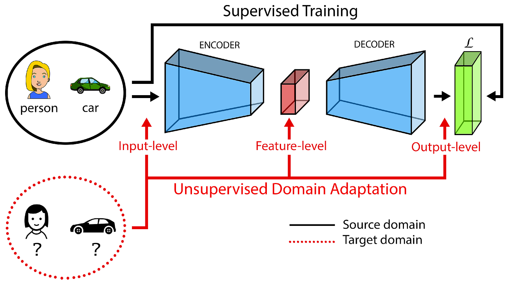

Synthetic to Real
시뮬레이션 데이터에서 학습한 모델이 실제 환경에서도 동작하도록 분포 차이를 줄이는 과정
왜 문제가 될까?
시뮬레이션으로 생성된 데이터는 라벨링이 쉽고 대량 생성이 가능하지만, 실제 환경과는 조명, 질감, 배경, 노이즈가 다릅니다.
이 차이 때문에 synthetic 데이터로만 학습한 모델은 real-world 데이터에서 성능이 급격히 떨어질 수 있습니다.
핵심 아이디어
Domain Adaptation을 통해 source(synthetic)와 target(real) 사이의 시각적·통계적 차이를 줄이고, 두 환경에서 공통으로 유지되는 핵심 특징을 학습하도록 만듭니다.
Domain Adaptation을 통해 source(synthetic)와 target(real) 사이의 시각적·통계적 차이를 줄이고, 두 환경에서 공통으로 유지되는 핵심 특징을 학습하도록 만듭니다.
